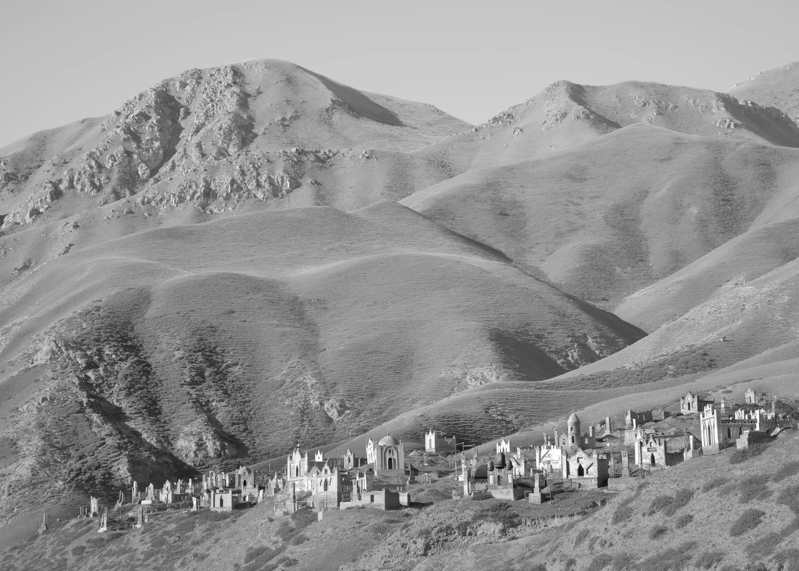
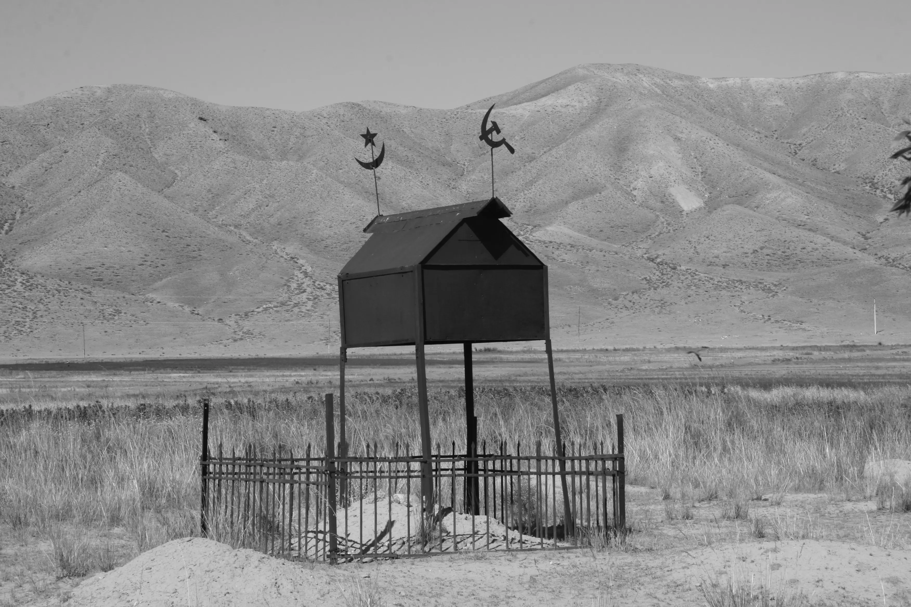
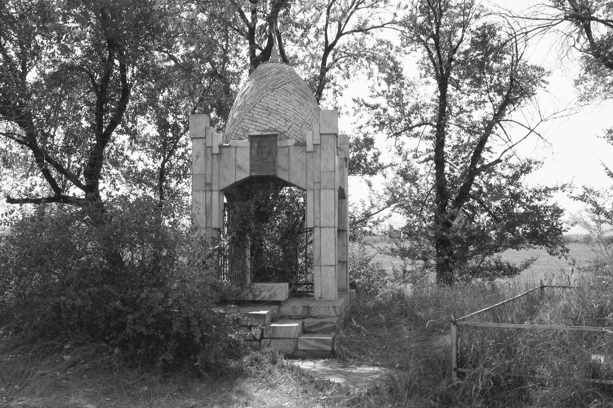
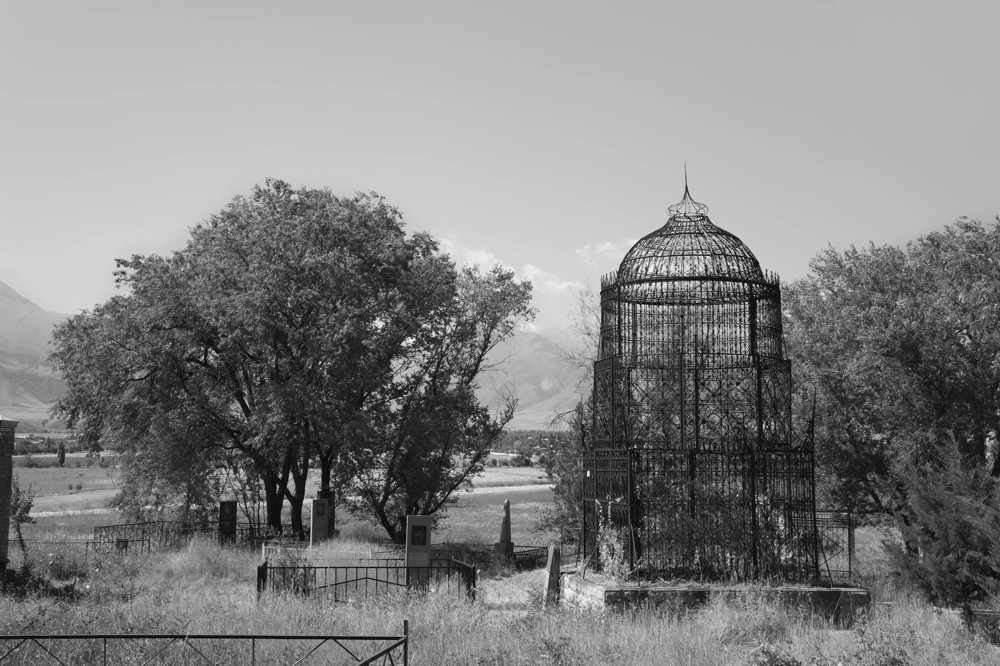
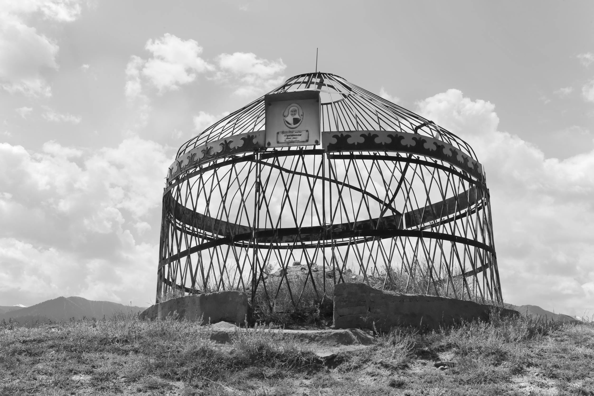
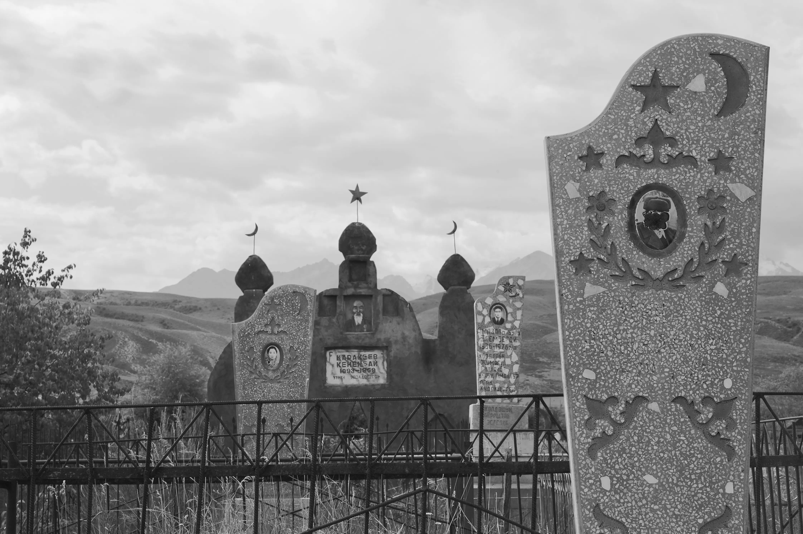
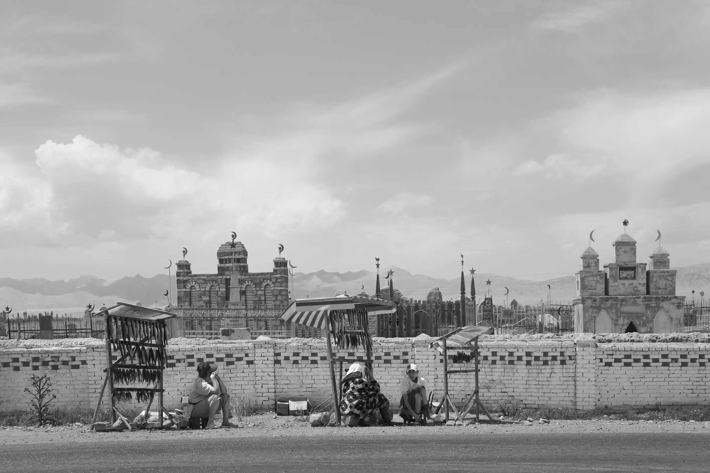

Cities of the Dead
University of Washington Press, 2014.
A Kyrgyz cemetery seen from a distance is astonishing. The ornate domes and minarets, tightly clustered behind stone walls, seem at odds with this desolate mountain region. Islam, the prominent religion in the region since the twelfth century, discourages tombstones or decorative markers. However, elaborate Kyrgyz tombs combine earlier nomadic customs with Muslim architectural forms. After the territory was formally incorporated into the Russian Empire in 1876, enamel portraits for the deceased were attached to the Muslim monuments. Yet everything within the walls is overgrown with weeds, for it is not Kyrgyz tradition for the living to frequent the graves of the dead.
Book design by Thomas Eykemans
Interview for Smithsonian Magazine











